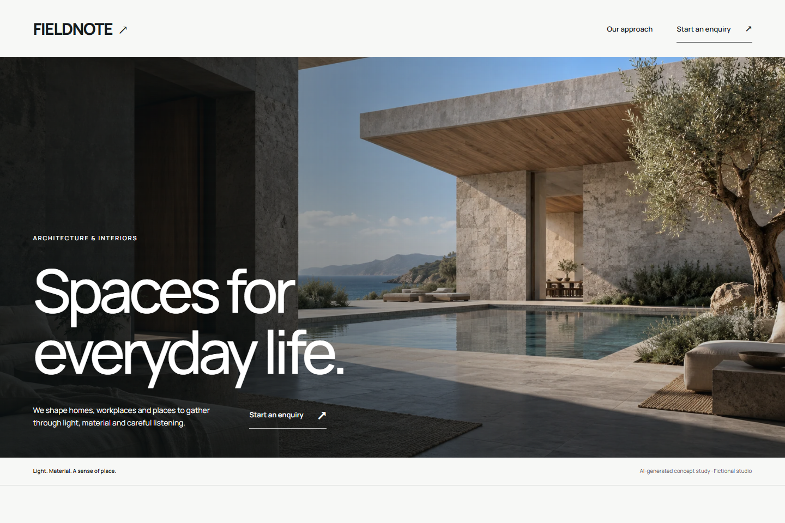

01 / Web Reference Design
A clearer brief for
your next website.
For people building with a coding agent. Turn a vague visual request into an actionable brief, then work from real references toward a page you can inspect.

“Make it look better” leaves too much unsaid.
A coding agent can produce a page quickly. It still needs to know who will use it, what they came to do and which parts of a visual reference are useful. A gallery alone doesn’t make those decisions.
Web Reference Design brings those questions into the workflow. The brief composer helps describe the task. The downloadable skill gives the agent a reference-led method for building and checking the result.
Try one real task.
- Create the brief. Describe a page, its audience, the action that matters and what needs to stay.
- Use a reference for a reason. Identify the layout, typography or interaction that helps this particular page.
- Inspect the result. Review the running page at desktop and mobile widths, and use its important controls.
The example is an interface you can use.
FIELDNOTE includes a working enquiry preview. Try submitting with missing fields, enter a sample enquiry, preview it and return to edit. It creates a local preview; it does not send a message to a real studio.
The project also includes a bicycle workshop example with service comparison and an appointment preview. It uses a different direction because the audience and task are different.
What this demonstrates, and its limits
This project combines a portable design workflow, a reference catalog, runnable examples and a brief composer. It shows an AI-assisted implementation with documented decisions and checks.
The skill guides a coding agent; it does not generate a website by itself or guarantee good design. External references keep their own licenses. Examples are demonstrations, and no customer adoption or business improvement is claimed.
Huy sets goals and constraints, reviews results and directs revisions. Codex supports research, implementation, debugging, tests and documentation. The seed reference collection is credited to Lê Huy Thái in the project.